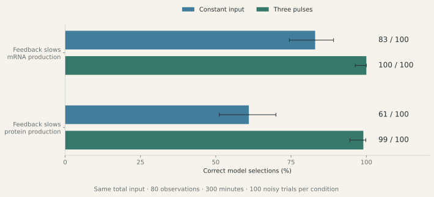
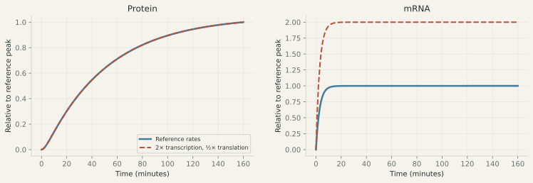

01 · Mechanistic model inference
A more revealing experiment for two biological mechanisms.
Three input pulses help identify which production step is being slowed, using the same number of simulated protein measurements and the same total input.
Cells make mRNA, then use it to make protein. Feedback can slow either step. Ryzowicz & Yildirim (2023) compare how these mechanisms affect protein dynamics. This study asks a further question: when both models can adjust their rates to fit the data, which input makes the correct mechanism easier to identify?
The result
| True feedback mechanism | Constant input | Three pulses |
|---|---|---|
| Slows mRNA production | 83 / 100 | 100 / 100 |
| Slows protein production | 61 / 100 | 99 / 100 |
Correct model selections in 100 noisy simulations per condition. Every experiment lasts 300 minutes and observes protein 80 times. Both candidate models refit four parameters. The pulse schedule alternates twice the reference input with zero input every 50 minutes, preserving the total input of the constant schedule.

Why the input helps
Eliminating the unobserved mRNA state produces an equation for protein alone. Translational feedback contributes an extra term that depends on how fast the protein level is changing. That term vanishes at equilibrium. Repeated rises and falls make the difference between the mechanisms more visible.
A screen compared five equal-input schedules across both mechanisms and three feedback strengths. Three pulses gave the largest worst-case separation within that menu. Repeated trials with added noise then tested how often the correct model was selected. This applies the established idea of designing experiments to discriminate between biochemical models to this model family.
An additional pulse comparison keeps basal transcription active. Selection improves in all four tested conditions, with a small improvement in one. The methods page gives the full counts and assumptions.
A mechanism and its individual rates are different questions
The earlier analysis identifies an exact production-rate trade-off. Multiply the mRNA production rate by a factor and divide the translation rate by the same factor: the protein trace stays unchanged. This symmetry persists under every prescribed input in these models. Measuring mRNA supplies information about the separate rates.

Protein alone cannot distinguish these rate settings.
Traces relative to each reference peak. M1 model · Fixed decay rates · Zero initial concentrations.
The interactive example uses the simple unregulated cascade. The argument also applies to the two feedback models. An mRNA measurement can help separate rates that protein measurements alone cannot distinguish; the precision depends on when and how accurately it is measured.
Scope
The pulse result is a simulation-based design result at specified generating parameters. It assumes known input delivery, zero initial concentrations, a fixed feedback exponent, and independent Gaussian measurement noise. Independent equations and numerical solvers cross-check the trajectories; multiple starts, differential evolution, and wider-bound refits check the fitting. Biological validation and robustness to delivery delays or correlated noise remain the next research questions.